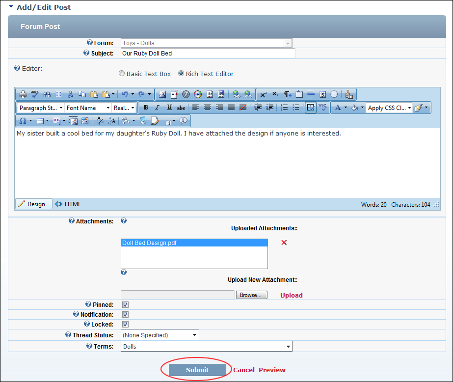

Adding a Forum Post (Advanced)
How to add an entry (commonly known as a post) to a forum in the Forums module. This tutorial covers the optional fields that can be enabled by Forum Administrators. See "Setting Forum Options" and See "Setting Forum Permissions"
- Navigate to the forum that you want to add the a new post to. See "Navigating to Forums & Forum Groups"
- Click the New Thread link.
- In the Subject text box, enter the subject of the thread. This will be the title of the post as it appears in the forum so choose a subject that best describes the purpose and content of the post.
- In the Editor, enter the body of the post.
- The following optional settings may also be available:
- At Attachments, select from these options:
- To attach an attachment upload which was completed for this session or previously terminated sessions, select it from the Uploaded Attachments window. Note: You can delete an uploaded file, by selecting it from the list and then clicking the Delete
 button.
button. - To upload a new attachment, click the Browse button and select the file to be attached from your computer and then click the Upload link.
- At Pinned, to 'pin' this post above existing posts in this forum, or to have the post appear in date/time order as is typical.
- At Notification, to be notified when a reply is made to this post or to disable notification.
- At Locked, to prevent others from replying to this post or to permit replies.
- At Thread Status, select one of the following options:
- (None Specified): select for no status to be displayed. This is the default option.
- Unresolved: select if the post asks a question requiring resolution.
- Resolved: select if the post is resolved or resolves a question. Typically this option is only selected when an existing post is answered.
- Informative: select if the post provides information.
- At Terms click the drop down list and then check the check box beside a term which relates to this post.
- Repeat the above step to associate additional terms.
- Optional. Click the Preview link to preview the post. If you wish to edit it further, click the Return To Edit link.
- Click the Submit link. If the post does not require moderation it is immediately added to the forum and is now displayed to you. If the post requires moderation a message is displayed explaining the moderation process. In this case, click the Return To Forum link.

Adding a Post Including Attachments and Optional Settings